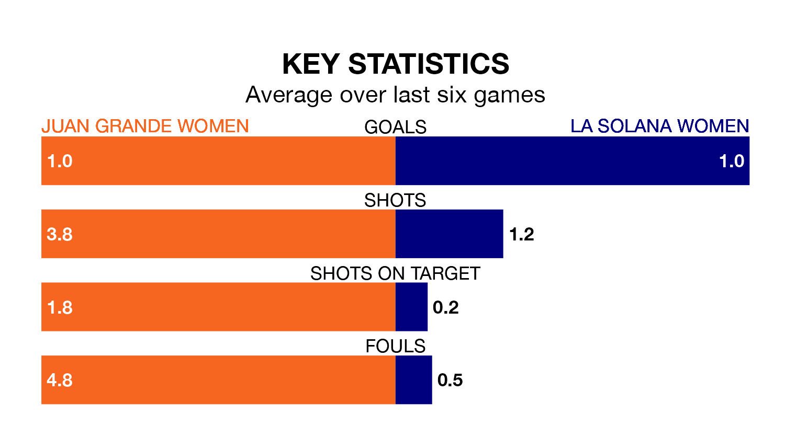

La Solana Women travel for Sunday lunchtime's match against Juan Grande Women looking to bounce back from defeat last time out in Segunda Federación Femenina.
La Solana, who sit zero in the league after 15 games, fell to a 1-0 away defeat to Fundación Tenerife Women on January 7.
They face a Juan Grande side who picked up a win in their last match, a 2-1 victory against Córdoba Women, and who sit 10th in the table.
With nine goals in 15 games so far this season, La Solana are the league's-15th-lowest scorers with 0.6 goals per game. And they are conceding at an average rate, letting in 19 goals at a rate of 1.3 per game.
Juan Grande, meanwhile, are average scorers, with 1.3 goals per game. They have conceded 0.9 goals per game.
The hosts are in mixed form in Segunda Federación Femenina, with two wins and a draw from their last six games.
And also with two wins and a draw over that period, la Solana's form is identical – they have both taken seven points from 18.
Updated: 15:34, 08/01/24